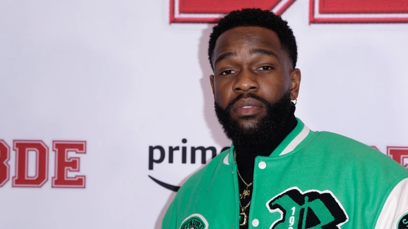

Le chanteur et sa compagne attendent leur premier enfant ! Tayc a annoncé l'heureuse nouvelle et s'est confié sur le rôle de papa qui l'attend.
Tayc enchaîne les heureux événements ! Entre le succès de ses albums, celui de la mini-série Christmas Flow (Netlix) et sa victoire dans Danse avec les stars en novembre 2021, tout sourit au chanteur de 25 ans. Et ce n'est pas tout, puisque celui dont le vrai nom est Julien Bouadjie s'apprête à devenir papa pour la première fois !
Tayc se confie sur sa future paternité
C'est sur les ondes de NRJ que Tayc a confirmé la bonne nouvelle. "Mon enfant arrive et j'ai mis ça en chanson", explique-t-il au sujet de son titre "Donne le moi". Dans celle-ci, il chante : "Même enceinte tu dois être classe [...] Bah oui, notre enfant ce sera quelqu'un / Le plus important pour un homme / C'est de donner la meilleure vie à sa famille / De veiller même quand tout le monde est endormi / Ce monde est si petit devant vos sourires / Moi j'ai épousé une lionne / Donc mes enfants vivront bien, je peux m'absenter [...] Donne le moi, donne le moi / Trop longtemps qu'on est ensemble / J'veux savoir à qui il va ressembler / J't'en supplie, donne moi mon bébé". "Il arrive bientôt... Je me sens stressé mais content parce que c'est la plus belle chose du monde. Avant même que ça arrive tu sais que ça va être une belle chose", confie le futur papa, visiblement aux anges.

Mercredi, le chanteur Tayc a annoncé dans sa story Instagram qu’il prenait une pause dans sa carrière.
Un choix murement réfléchi après des mois de tournée.
Tayc, c’est la pépite afrobeat française de ces dernières années.
Encore inconnu il y a cinq ans sa carrière décolle en 2019 avec des hits tels que « Le temps », « Ne pense plus » ou encore « Dodo ».
Fort de son succès florissant, le chanteur est parti à la conquête des scènes européennes faisant danser son public au rythme de l’afrolove.
Et s’il excelle dans son style, sa danse n’est pas mal non plus.
En 2021, le chanteur ressort grand vainqueur de l’émission « Danse avec les stars » malgré une blessure.
Un succès qui lui permet de conquérir un plus large public.
En 2022, il collabore avec le célèbre chanteur américain Jason Derulo.
Sa musique s’exporte alors qu’il fait la promotion de son quatrième album « Fleur Froide – Second état : la cristallisation » sur lequel figure le titre « No No No », dont le clip cumule 8,5 millions de vues.
Cette année, alors qu’il est sur les routes, le chanteur a également sorti un nouveau projet : « ROOM 96 ».
Une âme de stakhanoviste dont l’artiste se félicite mais le temps semble venu de prendre un peu de repos.
Tayc : "On se revoit peut-être dans quelques années"
Mercredi 26 juillet, Tayc adresse un message qui surprend ses fans.
Alors qu’il fait la promotion des derniers concerts de sa tournée, le chanteur a lâché une terrible annonce dans sa story.
« Salut salut tout le monde.
Juste après cette petite vidéo je vous mets une petite affiche avec toutes les dates de la fin de cet été.
Pourquoi je vous fais une vidéo juste avant ? C'est parce que ce sera sûrement avant une longue longue période de ma carrière,
la dernière fois que je tournerai autant en France, en Europe, en termes de showcase… Donc c'est la dernière année où je bouge vraiment partout",
a-t-il déclaré, avant d'ajouter : "Ensuite, on retourne dans la tanière, on retourne au cachot, on retourne hiberner.
On se revoit peut-être dans quelques années mais voilà, c'est potentiellement la dernière longue tournée de shows avec autant de dates.
Bisous à tout le monde ». Une nouvelle qui se comprend, les fans espèrent malgré tout que le chanteur reviendra vite avec de nouveaux hits.